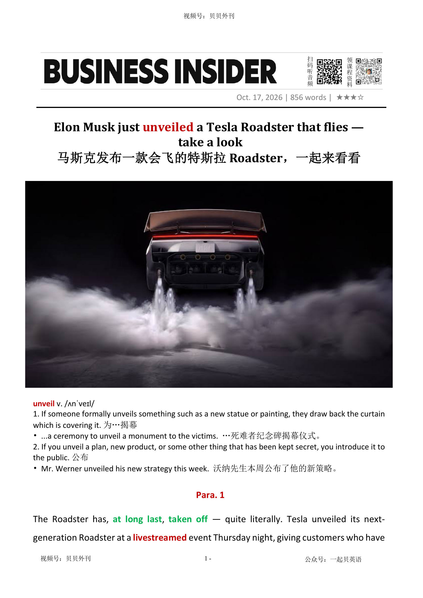

02 HEADLINE / 标题中英文解释
Elon Musk just unveiled a Tesla Roadster that flies — take a look
马斯克发布一款会飞的特斯拉 Roadster，一起来看看
unveil
为……揭幕；公布
to uncover something formally or introduce something that was kept secret
Elon Musk just unveiled a Tesla Roadster that flies — take a look
马斯克发布一款会飞的特斯拉 Roadster，一起来看看
为……揭幕；公布
to uncover something formally or introduce something that was kept secret文章报道特斯拉终于展示下一代 Roadster，并分析这辆能够短暂腾空、零到 60 英里加速仅 0.81 秒的跑车，对特斯拉真正的商业意义。
发布会上，Roadster 借助与 SpaceX 合作开发的高压储气罐和推进器完成坡道腾空、翻转和落地，计划提供性能版、推力版以及邀请制火箭版。
一些设计偏离特斯拉惯例，例如机械门锁和缺少传统侧后视镜，也带来是否符合道路法规的疑问；它强调人工驾驶，与公司长期宣传的自动驾驶方向形成反差。
文章回顾 Roadster 漫长历史：初代车型 2008 年推出，第二代 2017 年亮相后不断延期，预订者等待近十年，而特斯拉把机器人和自动驾驶项目置于更高优先级。
后半部分指出，这款车未必需要成为销量冠军。
它更像一场技术表演，用来证明特斯拉能制造其他公司做不到的产品、重新吸引华尔街注意，并招募顶尖工程师和 AI 人才。
结尾认为，Roadster 的成功标准不只是卖出多少辆，而是能否恢复特斯拉作为大胆技术公司的品牌想象力。
The article is about Tesla’s new Roadster. After many years of waiting, Tesla showed the car at a live event.
In the most dramatic demonstration, the Roadster drove up a ramp, left the ground, turned in the air and landed safely. The car uses high-pressure air tanks and small thrusters developed with help from SpaceX.
Tesla says one version can reach 60 miles per hour in only 0.81 seconds. The company plans several versions, including a special rocket model.
Some details are unusual for Tesla. The car appears to have mechanical door latches and no normal side mirrors.
This creates questions about whether it can legally drive on public roads. It is also designed as a car for human drivers, even though Tesla often talks about autonomous driving.
The Roadster has been delayed for many years. Tesla first showed the second-generation model in 2017, and some customers have waited almost a decade.
During that time, the company focused more on robots and self-driving technology. The main message is that the Roadster does not need to sell in huge numbers.
It can still help Tesla by showing technical skill, exciting investors and attracting talented engineers.
Roadster发布会震撼演示（Para 1-3） ├─ 现场特技：坡道倒立、腾空翻转平稳落地 ├─ 核心硬件：高压储气罐+多组推进器，SpaceX联合研发 └─ 性能参数：0-60mph仅0.81秒，分双座/单座版本 设计细节、版本与上路争议（Para 4-5） ├─ 设计改动：机械门锁，无后视镜，背离特斯拉传统 ├─ 三款配置：性能版、推力版、邀请制火箭版，定金不同 └─ 合规疑问：不一定符合各地道路法规，主打手动驾驶 漫长迭代的历史沿革（Para 6-7） ├─ 初代车型：2008发布，莲花底盘，2012停产 ├─ 二代预告：2017亮相，原定参数亮眼，交付一拖近十年 └─ 优先级：项目延后，机器人、自动驾驶放在首位 发布会的深层商业目的（Para 8-10） ├─ 对外信号：塑造超强技术形象，说服华尔街 ├─ 核心目标：作为人才招募宣传，吸引顶尖科技人才 └─ 定位认知：不需要大卖，作为品牌技术标杆即可
The Roadster has, at long last终于, taken off — quite literally. Tesla unveiled为……揭幕 its next-generation Roadster at a livestreamed网络直播 event Thursday night, giving customers who have waited years their first fresh look at the EV maker's new halo car旗舰车型. In a dramatic demonstration, the Roadster traveled up a huge curved呈弯曲状的 ramp斜坡 until it was upside down颠倒. The car then flew off the ramp, flipped快速翻转, and landed safely on the ground, thanks to thrusters推进器 attached to the bottom of the vehicle.
Roadster 终于起飞了，而且是字面意义上的真正起飞。周四晚间，特斯拉通过一场直播活动揭开了新一代 Roadster 的面纱。对于那些苦等多年的消费者而言，这也是他们第一次见到这款特斯拉的旗舰跑车。在一场相当震撼的演示中，Roadster 沿着一条巨大的弧形坡道一路向上，直至车身完全倒转、底朝天。紧接着，汽车从坡道上腾空而起，在空中翻转一圈，随后平稳地落回地面。让这一幕成为现实的，是安装在车身底部的推进器。
Well, it worked," Tesla CEO Elon Musk said after it successfully landed. "Flying cars are real," Lars Moravy, Tesla's VP of vehicle engineering, added. Musk called the latest Roadster a result of a collaboration with Tesla and SpaceX engineers. The Tesla CEO said the car uses an "advanced ultra-high pressure air tank箱" to lift itself. "The car has obviously altitude海拔 control thrusters and main thrusters in the rear后部, so it can basically fly like a rocket, and it could do rolls," he said.
“嗯，成功了。”在汽车平安着陆后，特斯拉首席执行官马斯克说道。“飞行汽车是真实存在的。”特斯拉负责车辆工程的副总裁拉尔斯·莫拉维接着说道。马斯克表示，这一代 Roadster 是特斯拉与 SpaceX 工程师联手打造的成果。他介绍说，这辆车采用了一套“先进的超高压气罐”作为升空动力。“显然，这辆车配备了用于控制飞行高度的推进器，以及位于车尾的主推进器。因此，它基本上可以像火箭一样飞行，甚至还能完成翻滚动作。”他说。
In a separate recorded demonstration shown on screen, Tesla also showed the Roadster hitting 60 mph in under one second, marking .81 seconds. Tesla shared more stats统计数字 about the Roadster on X: a two-seater with about 300 miles of range and a top speed over 230 mph. Some of the configurations配置 also appear to depend on whether the Roadster is equipped with "rocket" thrusters. For example, if the car is "air ready" and has the rocket, the Roadster seats only one.
在另一段单独播放的录制演示中，特斯拉还展示了 Roadster 加速至每小时 60 英里（约 97 公里），用时不到一秒，具体成绩为 0.81 秒。特斯拉随后在 X 平台上公布了更多性能参数：这是一款双座车，续航里程约为 300 英里（约 483 公里），最高时速超过 230 英里（约 370 公里）。不过，部分车型配置似乎还取决于车辆是否配备所谓的“火箭”推进器。举例来说，如果选择带有火箭推进器的“空中就绪”版本，Roadster 就只能容纳一名乘客。
There are also small details about the Roadster that notably尤其 diverge分叉 from Tesla's signature标志性的 design choices. The Roadster's door latches门闩, for example, appear to be mechanical机动的. Typical Tesla cars are known for their electronic door latches, which China is clamping down on due到期 to safety risks. The halo光环 Roadster vehicle also appears to lack side-view mirrors, which raises the question of how the Roadster will be street-legal under federal standards.
Roadster 还有一些细节，明显偏离了特斯拉一贯的设计风格。例如，它的车门把手看起来采用了机械结构。人们熟知的特斯拉车型通常使用电子门锁，而中国正因相关安全风险而加大对这类设计的限制力度。这款旗舰跑车似乎还没有配备侧视镜。这不免让人追问：按照联邦层面的车辆安全标准，Roadster 究竟能否合法上路？
Tesla's website lists three configurations of the car for purchase: performance, thrust, and rocket. The performance trim配置版本 requires an immediate $5,000 deposit订金, with an additional $45,000 due in 10 days. The thrust version requires a $250,000 deposit. The rocket trim appears to be available only through "invite only." Musk said the Roadster will be the only Tesla vehicle meant to be driven manually and that it's not "necessarily a safety-optimized使最优化 car." An observant善于观察的 audience member at the event also asked a glaring显眼的 question: Is it street legal? "Depends on your street," Musk said. "It'll be a viable可实施的 car."
特斯拉官网列出了三个可供购买的版本：Performance（性能版）、Thrust（推力版）和 Rocket（火箭版）。性能版需要立即支付 5,000 美元定金，并在 10 天内再支付 45,000 美元。推力版则要求支付 25 万美元定金。至于火箭版，目前似乎只接受邀请购买。马斯克表示，Roadster 将是特斯拉旗下唯一一款专为人工驾驶而设计的车型。他还坦言，这辆车“未必是以安全性为最优先目标来打造的”。发布会现场，一位观察敏锐的观众提出了一个再直接不过的问题：这辆车能合法上路吗？“那得看你的路是什么样的。”马斯克回答道，“它会是一辆真正可用的车。”
The revived苏醒 nameplate名牌 has been a long time coming. The original Roadster was Tesla's first production vehicle, launching in California in 2008. It used a chassis底盘 derived from British sports-car maker Lotus' Elise, but replaced its gasoline engine with an all-electric powertrain动力总成. That model ended production in 2012. Musk surprised audiences in November 2017 at an event for Tesla's Semi truck by unveiling a second-generation Roadster. At the time, Tesla said the two-door sports car would have a 1.9-second zero-to-60-mph time, a top speed above 250 mph, more than 600 miles of range, and a gargantuan巨大的 200-kilowatt-hour千瓦时 battery pack全套东西. That month, customers could put down付订金 a $50,000 deposit to reserve a Roadster, or pay $250,000 upfront预先 for a Founders Series model.
这块重新启用的 Roadster 招牌，特斯拉等了很久。最初的 Roadster 是特斯拉生产的第一款量产车，于 2008 年在加利福尼亚州推出。它以英国跑车制造商莲花（Lotus）的 Elise 底盘为基础，却用纯电动动力系统取代了传统汽油发动机。该车型于 2012 年停产。2017 年 11 月，在特斯拉 Semi 电动卡车的发布活动上，马斯克出人意料地揭晓了第二代 Roadster。当时，特斯拉宣称，这款双门跑车从静止加速至每小时 60 英里只需 1.9 秒，最高时速超过 250 英里（约 402 公里），续航里程超过 600 英里（约 966 公里），并搭载一块容量高达 200 千瓦时的巨型电池组。同月，消费者便可以支付 5 万美元定金，提前锁定一辆 Roadster；如果愿意一次性预付 25 万美元，则可以购买创始人系列车型。
Musk also floated提出 a SpaceX package for the supercar with cold-gas thrusters that he said might "allow a Tesla to fly." With the wait time creeping悄悄地缓慢行进 toward a decade, Musk apologized to "long-suffering" deposit holders in an earnings call, adding that Tesla was focusing heavily on its robotics and autonomy programs. "Roadster is not just icing糖霜 on the cake; it's the cherry on the icing on the cake马斯克当时还提出：为这款超级跑车推出…," he said at the time. "We are working on it, but it has to come behind the things that have a more serious impact on the world."
马斯克当时还提出：为这款超级跑车推出 SpaceX 套件，配备冷气体推进器。他声称，这套装置或许能够“让特斯拉飞起来”。然而，等待时间眼看就要逼近十年。在一次财报电话会议上，面对那些苦苦等待、饱受煎熬的定金用户，马斯克为此表达了歉意。他同时解释说，特斯拉当时正将大量精力投入机器人和自动驾驶项目。“Roadster 不只是锦上添花；更是锦上添的点睛之笔。”他当时这样形容。“我们一直在推进这个项目，但它必须排在那些能够对世界产生更重大影响的事情之后。”
Will the two-door electric sports car be street legal? Who knows. Instead, the car is accomplishing something more tangible有形的 — and more obviously Musk-like: make Tesla look like the kind of company that can build things other companies cannot. That's a useful message for Wall Street and for the engineers Tesla wants to hire. Tesla is already valued far more like a tech company than a traditional automaker. For years, investors have bet heavily on重押 its ambitions in autonomy, artificial intelligence, robotics, and robotaxis. A flying (or, at least, hopping) Roadster does not prove those businesses will work, but it makes Tesla's technological ambitions more legible清晰可读的.
这款双门电动跑车最终能否合法上路？谁也说不准。但它正在实现另一件更为切实、也更具马斯克个人风格的事情：它让人们相信，特斯拉有能力打造出其他企业望尘莫及的产品。对于华尔街的投资者，以及特斯拉希望招揽的工程师而言，这无疑是一个有价值的讯息。特斯拉的估值早已更接近一家科技公司，而非一家传统汽车制造商。多年来，投资者一直大举押注于它在自动驾驶、人工智能、机器人和无人驾驶出租车等领域的雄心。一辆能够飞起来，或者至少能够跳起来的 Roadster，并不能证明这些业务最终一定会成功。但它至少让特斯拉那些宏大的技术抱负变得更加直观、更容易被外界理解。
Musk also has long treated product spectacles精彩的表演 as recruiting events, too. At a 2019 Neuralink presentation, where he announced that the company had successfully implanted将…移植入 sensors传感器 in rats' brains, he said the "main reason for doing this presentation is recruiting." Ahead of Tesla's 2021 AI Day, Musk posted on X that "convincing the best AI talent to join Tesla is the sole goal."
马斯克也向来善于将产品发布会办成招揽人才的绝佳机会。2019 年，在 Neuralink 的一场展示活动上，马斯克宣布该公司已成功将传感器植入老鼠的大脑。当时他就表示：“举办这场发布会的主要目的，就是招聘。”2021 年特斯拉人工智能日活动举行前夕，马斯克也曾在 X 平台上发文称：“说服最优秀的人工智能人才加入特斯拉，是这场活动唯一的目标。”
The Roadster reveal follows a very similar playbook. What better way to excite more techies技术爱好者 than a flying car? Thursday's Roadster reveal was an exciting technical feat技艺 for up-and-coming有望成功的 tech talent. Either way, this car may not need to be a volume sales winner to be a hit for Tesla. It might just need to be the tech belle of the ball舞会上最引人注目的女子.
这一次 Roadster 的亮相，显然沿用了同一套打法。还有什么能比一辆会飞的汽车，更能点燃科技人才的热情呢？周四的 Roadster 发布，对于那些前途无量的科技人才来说，是一项令人兴奋的技术壮举。无论如何，这辆车或许根本不需要成为一款畅销车型，便足以为特斯拉赢得成功。它可能只需要成为整个科技圈舞会上那个最耀眼、最引人注目的主角。
为……揭幕；公布
to uncover something formally or introduce something that was kept secret
Mr. Werner unveiled his new strategy this week. 沃纳先生本周公布了他的新策略。
Tesla unveiled its next-generation Roadster at a livestreamed event Thursday night, giving customers who have waited years their first fresh look at the EV maker's new halo car.
Roadster 终于起飞了，而且是字面意义上的真正起飞。周四晚间，特斯拉通过一场直播活动揭开了新一代 Roadster 的面纱。对于那些苦等多年的消费者而言，这也是他们第一次见到这款特斯拉的旗舰跑车。在一场相当震撼的演示中，Roadster 沿着一条巨大的弧形坡道一路向上，直至车身完全倒转、底朝天。紧接着，汽车从坡道上腾空而起，在空中翻转一圈，随后平稳地落回地面。让这一幕成为现实的，是安装在车身底部的推进器。
终于；总算；经过漫长等待之后
after a long period of waiting; finally, especially when something has taken longer than expected
At long last, the company has launched its long-awaited product. 经过漫长的等待，这家公司终于推出了期待已久的产品。
The Roadster has, at long last, taken off — quite literally.
Roadster 终于起飞了，而且是字面意义上的真正起飞。周四晚间，特斯拉通过一场直播活动揭开了新一代 Roadster 的面纱。对于那些苦等多年的消费者而言，这也是他们第一次见到这款特斯拉的旗舰跑车。在一场相当震撼的演示中，Roadster 沿着一条巨大的弧形坡道一路向上，直至车身完全倒转、底朝天。紧接着，汽车从坡道上腾空而起，在空中翻转一圈，随后平稳地落回地面。让这一幕成为现实的，是安装在车身底部的推进器。
网络直播；在线直播
to broadcast an event or activity over the internet in real time
The company will livestream the product launch on its official website. 这家公司将在官方网站上对产品发布会进行网络直播。
Tesla unveiled its next-generation Roadster at a livestreamed event Thursday night, giving customers who have waited years their first fresh look at the EV maker's new halo car.
Roadster 终于起飞了，而且是字面意义上的真正起飞。周四晚间，特斯拉通过一场直播活动揭开了新一代 Roadster 的面纱。对于那些苦等多年的消费者而言，这也是他们第一次见到这款特斯拉的旗舰跑车。在一场相当震撼的演示中，Roadster 沿着一条巨大的弧形坡道一路向上，直至车身完全倒转、底朝天。紧接着，汽车从坡道上腾空而起，在空中翻转一圈，随后平稳地落回地面。让这一幕成为现实的，是安装在车身底部的推进器。
旗舰车型；品牌形象车型（主要用于展示车企的尖端技术、性能或设计，以提升品牌形象，而非单纯追求销量）
a flagship vehicle designed to showcase a carmaker's most advanced technology, performance, or design, often to enhance the brand's image rather than generate high sales
The automaker unveiled a halo car to showcase its latest electric-vehicle technology. 这家汽车制造商发布了一款旗舰车型，以展示其最新的电动汽车技术。
Tesla unveiled its next-generation Roadster at a livestreamed event Thursday night, giving customers who have waited years their first fresh look at the EV maker's new halo car.
Roadster 终于起飞了，而且是字面意义上的真正起飞。周四晚间，特斯拉通过一场直播活动揭开了新一代 Roadster 的面纱。对于那些苦等多年的消费者而言，这也是他们第一次见到这款特斯拉的旗舰跑车。在一场相当震撼的演示中，Roadster 沿着一条巨大的弧形坡道一路向上，直至车身完全倒转、底朝天。紧接着，汽车从坡道上腾空而起，在空中翻转一圈，随后平稳地落回地面。让这一幕成为现实的，是安装在车身底部的推进器。
（宗教绘画中圣人头上的）光环 Roadster
a ring of light around the head of a holy person in a religious drawing or painting
Tesla unveiled its next-generation Roadster at a livestreamed event Thursday night, giving customers who have waited years their first fresh look at the EV maker's new halo car.
Roadster 终于起飞了，而且是字面意义上的真正起飞。周四晚间，特斯拉通过一场直播活动揭开了新一代 Roadster 的面纱。对于那些苦等多年的消费者而言，这也是他们第一次见到这款特斯拉的旗舰跑车。在一场相当震撼的演示中，Roadster 沿着一条巨大的弧形坡道一路向上，直至车身完全倒转、底朝天。紧接着，汽车从坡道上腾空而起，在空中翻转一圈，随后平稳地落回地面。让这一幕成为现实的，是安装在车身底部的推进器。
呈弯曲状的；弧形的
having a round shape
a curved path/roof/blade蜿蜒的道路；拱顶；弧形刀片
In a dramatic demonstration, the Roadster traveled up a huge curved ramp until it was upside down.
Roadster 终于起飞了，而且是字面意义上的真正起飞。周四晚间，特斯拉通过一场直播活动揭开了新一代 Roadster 的面纱。对于那些苦等多年的消费者而言，这也是他们第一次见到这款特斯拉的旗舰跑车。在一场相当震撼的演示中，Roadster 沿着一条巨大的弧形坡道一路向上，直至车身完全倒转、底朝天。紧接着，汽车从坡道上腾空而起，在空中翻转一圈，随后平稳地落回地面。让这一幕成为现实的，是安装在车身底部的推进器。
斜坡；坡道
a slope joining two places when one is higher than the other
Ramps should be provided for wheelchair users. 应该给轮椅使用者提供坡道。
In a dramatic demonstration, the Roadster traveled up a huge curved ramp until it was upside down.
Roadster 终于起飞了，而且是字面意义上的真正起飞。周四晚间，特斯拉通过一场直播活动揭开了新一代 Roadster 的面纱。对于那些苦等多年的消费者而言，这也是他们第一次见到这款特斯拉的旗舰跑车。在一场相当震撼的演示中，Roadster 沿着一条巨大的弧形坡道一路向上，直至车身完全倒转、底朝天。紧接着，汽车从坡道上腾空而起，在空中翻转一圈，随后平稳地落回地面。让这一幕成为现实的，是安装在车身底部的推进器。
（使）快速翻转，迅速翻动
to turn over into a different position with a sudden quick movement; to make sth do this
The plane flipped and crashed.飞机猛地翻转，撞毁了。
The car then flew off the ramp, flipped, and landed safely on the ground, thanks to thrusters attached to the bottom of the vehicle.
Roadster 终于起飞了，而且是字面意义上的真正起飞。周四晚间，特斯拉通过一场直播活动揭开了新一代 Roadster 的面纱。对于那些苦等多年的消费者而言，这也是他们第一次见到这款特斯拉的旗舰跑车。在一场相当震撼的演示中，Roadster 沿着一条巨大的弧形坡道一路向上，直至车身完全倒转、底朝天。紧接着，汽车从坡道上腾空而起，在空中翻转一圈，随后平稳地落回地面。让这一幕成为现实的，是安装在车身底部的推进器。
推进器；推力装置
a device that produces thrust to propel or change the direction of a vehicle, aircraft, or spacecraft
The spacecraft uses small thrusters to adjust its position in orbit. 这艘航天器利用小型推进器调整其在轨道上的位置。
The car then flew off the ramp, flipped, and landed safely on the ground, thanks to thrusters attached to the bottom of the vehicle.
Roadster 终于起飞了，而且是字面意义上的真正起飞。周四晚间，特斯拉通过一场直播活动揭开了新一代 Roadster 的面纱。对于那些苦等多年的消费者而言，这也是他们第一次见到这款特斯拉的旗舰跑车。在一场相当震撼的演示中，Roadster 沿着一条巨大的弧形坡道一路向上，直至车身完全倒转、底朝天。紧接着，汽车从坡道上腾空而起，在空中翻转一圈，随后平稳地落回地面。让这一幕成为现实的，是安装在车身底部的推进器。
（贮放液体或气体的）箱，槽，罐
a large container for holding liquid or gas
a hot water tank热水箱
The Tesla CEO said the car uses an "advanced ultra-high pressure air tank" to lift itself.
“嗯，成功了。”在汽车平安着陆后，特斯拉首席执行官马斯克说道。“飞行汽车是真实存在的。”特斯拉负责车辆工程的副总裁拉尔斯·莫拉维接着说道。马斯克表示，这一代 Roadster 是特斯拉与 SpaceX 工程师联手打造的成果。他介绍说，这辆车采用了一套“先进的超高压气罐”作为升空动力。“显然，这辆车配备了用于控制飞行高度的推进器，以及位于车尾的主推进器。因此，它基本上可以像火箭一样飞行，甚至还能完成翻滚动作。”他说。
海拔；海拔高度；高程
the height above sea level
We are flying at an altitude of 6 000 metres.我们的飞行高度是6 000米。
"The car has obviously altitude control thrusters and main thrusters in the rear, so it can basically fly like a rocket, and it could do rolls," he said.
“嗯，成功了。”在汽车平安着陆后，特斯拉首席执行官马斯克说道。“飞行汽车是真实存在的。”特斯拉负责车辆工程的副总裁拉尔斯·莫拉维接着说道。马斯克表示，这一代 Roadster 是特斯拉与 SpaceX 工程师联手打造的成果。他介绍说，这辆车采用了一套“先进的超高压气罐”作为升空动力。“显然，这辆车配备了用于控制飞行高度的推进器，以及位于车尾的主推进器。因此，它基本上可以像火箭一样飞行，甚至还能完成翻滚动作。”他说。
后部
the back part of sth
A trailer was attached to the rear of the truck.卡车后面挂了一辆拖车。
"The car has obviously altitude control thrusters and main thrusters in the rear, so it can basically fly like a rocket, and it could do rolls," he said.
“嗯，成功了。”在汽车平安着陆后，特斯拉首席执行官马斯克说道。“飞行汽车是真实存在的。”特斯拉负责车辆工程的副总裁拉尔斯·莫拉维接着说道。马斯克表示，这一代 Roadster 是特斯拉与 SpaceX 工程师联手打造的成果。他介绍说，这辆车采用了一套“先进的超高压气罐”作为升空动力。“显然，这辆车配备了用于控制飞行高度的推进器，以及位于车尾的主推进器。因此，它基本上可以像火箭一样飞行，甚至还能完成翻滚动作。”他说。
统计数字
Stats are facts which are obtained from analysing information expressed in numbers. Stats is an abbreviation for statistics.
...a fall in April's retail sales stats. ...4月份零售总额的下降。
Tesla shared more stats about the Roadster on X: a two-seater with about 300 miles of range and a top speed over 230 mph.
在另一段单独播放的录制演示中，特斯拉还展示了 Roadster 加速至每小时 60 英里（约 97 公里），用时不到一秒，具体成绩为 0.81 秒。特斯拉随后在 X 平台上公布了更多性能参数：这是一款双座车，续航里程约为 300 英里（约 483 公里），最高时速超过 230 英里（约 370 公里）。不过，部分车型配置似乎还取决于车辆是否配备所谓的“火箭”推进器。举例来说，如果选择带有火箭推进器的“空中就绪”版本，Roadster 就…
(计算机系统的) 配置
The configuration of a computer system is the way in which all its parts, such as the hardware and software, are connected together in order for the computer to work.
Prices range from $119 to $199, depending on the particular configuration. 价格根据配置的不同从119美元到199美元不等。
Some of the configurations also appear to depend on whether the Roadster is equipped with "rocket" thrusters.
在另一段单独播放的录制演示中，特斯拉还展示了 Roadster 加速至每小时 60 英里（约 97 公里），用时不到一秒，具体成绩为 0.81 秒。特斯拉随后在 X 平台上公布了更多性能参数：这是一款双座车，续航里程约为 300 英里（约 483 公里），最高时速超过 230 英里（约 370 公里）。不过，部分车型配置似乎还取决于车辆是否配备所谓的“火箭”推进器。举例来说，如果选择带有火箭推进器的“空中就绪”版本，Roadster 就…
装备; 配备
If you equip a person or thing with something, you give them the tools or equipment that are needed.
They try to equip their vehicles with gadgets to deal with every possible contingency. 他们尽量给他们的车辆配备各种小装置以应付任何可能的突发状况。
尤其；特别
1. used for giving a good or the most important example of sth
The house had many drawbacks, most notably its price.这房子有很多缺陷，尤其是它的价格。 2. to a great degree极大程度上；非常
There are also small details about the Roadster that notably diverge from Tesla's signature design choices.
Roadster 还有一些细节，明显偏离了特斯拉一贯的设计风格。例如，它的车门把手看起来采用了机械结构。人们熟知的特斯拉车型通常使用电子门锁，而中国正因相关安全风险而加大对这类设计的限制力度。这款旗舰跑车似乎还没有配备侧视镜。这不免让人追问：按照联邦层面的车辆安全标准，Roadster 究竟能否合法上路？
分叉；岔开
to separate and go in different directions
The parallel lines appear to diverge.这些平行线像是岔开了。
There are also small details about the Roadster that notably diverge from Tesla's signature design choices.
Roadster 还有一些细节，明显偏离了特斯拉一贯的设计风格。例如，它的车门把手看起来采用了机械结构。人们熟知的特斯拉车型通常使用电子门锁，而中国正因相关安全风险而加大对这类设计的限制力度。这款旗舰跑车似乎还没有配备侧视镜。这不免让人追问：按照联邦层面的车辆安全标准，Roadster 究竟能否合法上路？
标志性的；独具特色的；代表性的
characteristic of a particular person, company or thing
The company unveiled its signature design at the auto show. 这家公司在车展上展示了其标志性设计。
There are also small details about the Roadster that notably diverge from Tesla's signature design choices.
Roadster 还有一些细节，明显偏离了特斯拉一贯的设计风格。例如，它的车门把手看起来采用了机械结构。人们熟知的特斯拉车型通常使用电子门锁，而中国正因相关安全风险而加大对这类设计的限制力度。这款旗舰跑车似乎还没有配备侧视镜。这不免让人追问：按照联邦层面的车辆安全标准，Roadster 究竟能否合法上路？
门闩
1. A latch is a fastening on a door or gate. It consists of a metal bar which you lift in order to open the door.
You left the latch off the gate and the dog escaped.
The Roadster's door latches, for example, appear to be mechanical.
Roadster 还有一些细节，明显偏离了特斯拉一贯的设计风格。例如，它的车门把手看起来采用了机械结构。人们熟知的特斯拉车型通常使用电子门锁，而中国正因相关安全风险而加大对这类设计的限制力度。这款旗舰跑车似乎还没有配备侧视镜。这不免让人追问：按照联邦层面的车辆安全标准，Roadster 究竟能否合法上路？
机动的；机械驱动的；机械的
1. operated by power from an engine
a mechanical device/toy/clock 机械装置╱玩具╱钟表
The Roadster's door latches, for example, appear to be mechanical.
Roadster 还有一些细节，明显偏离了特斯拉一贯的设计风格。例如，它的车门把手看起来采用了机械结构。人们熟知的特斯拉车型通常使用电子门锁，而中国正因相关安全风险而加大对这类设计的限制力度。这款旗舰跑车似乎还没有配备侧视镜。这不免让人追问：按照联邦层面的车辆安全标准，Roadster 究竟能否合法上路？
严厉打击（犯罪等）
to take strict action in order to prevent sth, especially crime
a campaign by police to clamp down on street crime警方严厉打击街头犯罪的运动
侧视图；侧面
a view of a person or object from the side rather than from the front or back
The side view of the car reveals its sleek, aerodynamic design. 这辆车的侧视图展现了其流畅的空气动力学设计。
（汽车的）配置版本；装饰条；饰边
the particular version or model of a vehicle, with specific features and equipment; decorative material added to the edges or surface of something
The new SUV is available in three trim levels, each with different features.
The performance trim requires an immediate $5,000 deposit, with an additional $45,000 due in 10 days.
特斯拉官网列出了三个可供购买的版本：Performance（性能版）、Thrust（推力版）和 Rocket（火箭版）。性能版需要立即支付 5,000 美元定金，并在 10 天内再支付 45,000 美元。推力版则要求支付 25 万美元定金。至于火箭版，目前似乎只接受邀请购买。马斯克表示，Roadster 将是特斯拉旗下唯一一款专为人工驾驶而设计的车型。他还坦言，这辆车“未必是以安全性为最优先目标来打造的”。发布会现场，一位观察敏锐的观…
订金；订钱
a sum of money that is given as the first part of a larger payment
We've put down a 5% deposit on the house.我们已支付了房款的5%作为订金。
The performance trim requires an immediate $5,000 deposit, with an additional $45,000 due in 10 days.
特斯拉官网列出了三个可供购买的版本：Performance（性能版）、Thrust（推力版）和 Rocket（火箭版）。性能版需要立即支付 5,000 美元定金，并在 10 天内再支付 45,000 美元。推力版则要求支付 25 万美元定金。至于火箭版，目前似乎只接受邀请购买。马斯克表示，Roadster 将是特斯拉旗下唯一一款专为人工驾驶而设计的车型。他还坦言，这辆车“未必是以安全性为最优先目标来打造的”。发布会现场，一位观察敏锐的观…
到期，应付的
when a sum of money is due , it must be paid immediately
Payment is due on 1 October.付款期限为10月1日。
Typical Tesla cars are known for their electronic door latches, which China is clamping down on due to safety risks.
Roadster 还有一些细节，明显偏离了特斯拉一贯的设计风格。例如，它的车门把手看起来采用了机械结构。人们熟知的特斯拉车型通常使用电子门锁，而中国正因相关安全风险而加大对这类设计的限制力度。这款旗舰跑车似乎还没有配备侧视镜。这不免让人追问：按照联邦层面的车辆安全标准，Roadster 究竟能否合法上路？
用手的；手工的；体力的
involving using the hands or physical strength
manual labour/jobs/skills 体力劳动╱活儿；手工技巧
使最优化；充分利用
to make sth as good as it can be; to use sth in the best possible way
to optimize the use of resources充分利用资源
Musk said the Roadster will be the only Tesla vehicle meant to be driven manually and that it's not "necessarily a safety-optimized car."
特斯拉官网列出了三个可供购买的版本：Performance（性能版）、Thrust（推力版）和 Rocket（火箭版）。性能版需要立即支付 5,000 美元定金，并在 10 天内再支付 45,000 美元。推力版则要求支付 25 万美元定金。至于火箭版，目前似乎只接受邀请购买。马斯克表示，Roadster 将是特斯拉旗下唯一一款专为人工驾驶而设计的车型。他还坦言，这辆车“未必是以安全性为最优先目标来打造的”。发布会现场，一位观察敏锐的观…
善于观察的；观察力敏锐的
good at noticing things around you
How very observant of you!你真有眼力！
An observant audience member at the event also asked a glaring question: Is it street legal?
特斯拉官网列出了三个可供购买的版本：Performance（性能版）、Thrust（推力版）和 Rocket（火箭版）。性能版需要立即支付 5,000 美元定金，并在 10 天内再支付 45,000 美元。推力版则要求支付 25 万美元定金。至于火箭版，目前似乎只接受邀请购买。马斯克表示，Roadster 将是特斯拉旗下唯一一款专为人工驾驶而设计的车型。他还坦言，这辆车“未必是以安全性为最优先目标来打造的”。发布会现场，一位观察敏锐的观…
显眼的；明显的；易见的
1. very easily seen
a glaring error/omission/inconsistency/injustice 明显的错误╱疏漏╱不一致╱不公正
An observant audience member at the event also asked a glaring question: Is it street legal?
特斯拉官网列出了三个可供购买的版本：Performance（性能版）、Thrust（推力版）和 Rocket（火箭版）。性能版需要立即支付 5,000 美元定金，并在 10 天内再支付 45,000 美元。推力版则要求支付 25 万美元定金。至于火箭版，目前似乎只接受邀请购买。马斯克表示，Roadster 将是特斯拉旗下唯一一款专为人工驾驶而设计的车型。他还坦言，这辆车“未必是以安全性为最优先目标来打造的”。发布会现场，一位观察敏锐的观…
可实施的；切实可行的
that can be done; that will be successful
a viable option/proposition 切实可行的选择╱提议
"It'll be a viable car."
特斯拉官网列出了三个可供购买的版本：Performance（性能版）、Thrust（推力版）和 Rocket（火箭版）。性能版需要立即支付 5,000 美元定金，并在 10 天内再支付 45,000 美元。推力版则要求支付 25 万美元定金。至于火箭版，目前似乎只接受邀请购买。马斯克表示，Roadster 将是特斯拉旗下唯一一款专为人工驾驶而设计的车型。他还坦言，这辆车“未必是以安全性为最优先目标来打造的”。发布会现场，一位观察敏锐的观…
（使）苏醒，复活
1. to become, or to make sb/sth become, conscious or healthy and strong again
The economy is beginning to revive.经济开始复苏。
The revived nameplate has been a long time coming.
这块重新启用的 Roadster 招牌，特斯拉等了很久。最初的 Roadster 是特斯拉生产的第一款量产车，于 2008 年在加利福尼亚州推出。它以英国跑车制造商莲花（Lotus）的 Elise 底盘为基础，却用纯电动动力系统取代了传统汽油发动机。该车型于 2012 年停产。2017 年 11 月，在特斯拉 Semi 电动卡车的发布活动上，马斯克出人意料地揭晓了第二代 Roadster。当时，特斯拉宣称，这款双门跑车从静止加速至每小时…
名牌；标示牌；名称牌
a sign or plate showing the name of a company, person, owner or maker
The launch of Tesla's new Roadster has been a long time coming. 特斯拉新款 Roadster 的发布让人们等了很久。
The revived nameplate has been a long time coming.
这块重新启用的 Roadster 招牌，特斯拉等了很久。最初的 Roadster 是特斯拉生产的第一款量产车，于 2008 年在加利福尼亚州推出。它以英国跑车制造商莲花（Lotus）的 Elise 底盘为基础，却用纯电动动力系统取代了传统汽油发动机。该车型于 2012 年停产。2017 年 11 月，在特斯拉 Semi 电动卡车的发布活动上，马斯克出人意料地揭晓了第二代 Roadster。当时，特斯拉宣称，这款双门跑车从静止加速至每小时…
底盘；底架
the main supporting frame of a vehicle, on which the engine, wheels, and other parts are mounted
The new electric vehicle is built on a lightweight chassis.
It used a chassis derived from British sports-car maker Lotus' Elise, but replaced its gasoline engine with an all-electric powertrain.
这块重新启用的 Roadster 招牌，特斯拉等了很久。最初的 Roadster 是特斯拉生产的第一款量产车，于 2008 年在加利福尼亚州推出。它以英国跑车制造商莲花（Lotus）的 Elise 底盘为基础，却用纯电动动力系统取代了传统汽油发动机。该车型于 2012 年停产。2017 年 11 月，在特斯拉 Semi 电动卡车的发布活动上，马斯克出人意料地揭晓了第二代 Roadster。当时，特斯拉宣称，这款双门跑车从静止加速至每小时…
从…衍生出；起源于；来自
to come or develop from sth
The word ‘politics’ is derived from a Greek word meaning ‘city’. politics一词源自希腊语，意思是city。
动力总成；动力传动系统（包括发动机或电动机、变速器等产生动力并将动力传递至车轮的部件）
the components of a vehicle that generate power and deliver it to the wheels, including the engine or electric motor and transmission
The new electric vehicle uses an advanced powertrain to improve efficiency. 这款新型电动汽车采用先进的动力总成，以提高效率。
It used a chassis derived from British sports-car maker Lotus' Elise, but replaced its gasoline engine with an all-electric powertrain.
这块重新启用的 Roadster 招牌，特斯拉等了很久。最初的 Roadster 是特斯拉生产的第一款量产车，于 2008 年在加利福尼亚州推出。它以英国跑车制造商莲花（Lotus）的 Elise 底盘为基础，却用纯电动动力系统取代了传统汽油发动机。该车型于 2012 年停产。2017 年 11 月，在特斯拉 Semi 电动卡车的发布活动上，马斯克出人意料地揭晓了第二代 Roadster。当时，特斯拉宣称，这款双门跑车从静止加速至每小时…
巨大的；庞大的
extremely large
a gargantuan appetite/meal 食欲极佳；丰盛的大餐
At the time, Tesla said the two-door sports car would have a 1.9-second zero-to-60-mph time, a top speed above 250 mph, more than 600 miles of range, and a gargantuan 200-kilowatt-hour battery pack.
这块重新启用的 Roadster 招牌，特斯拉等了很久。最初的 Roadster 是特斯拉生产的第一款量产车，于 2008 年在加利福尼亚州推出。它以英国跑车制造商莲花（Lotus）的 Elise 底盘为基础，却用纯电动动力系统取代了传统汽油发动机。该车型于 2012 年停产。2017 年 11 月，在特斯拉 Semi 电动卡车的发布活动上，马斯克出人意料地揭晓了第二代 Roadster。当时，特斯拉宣称，这款双门跑车从静止加速至每小时…
千瓦时；一度（电）
( abbr. kWh ) a unit for measuring electrical energy equal to the power provided by one kilowatt in one hour
At the time, Tesla said the two-door sports car would have a 1.9-second zero-to-60-mph time, a top speed above 250 mph, more than 600 miles of range, and a gargantuan 200-kilowatt-hour battery pack.
这块重新启用的 Roadster 招牌，特斯拉等了很久。最初的 Roadster 是特斯拉生产的第一款量产车，于 2008 年在加利福尼亚州推出。它以英国跑车制造商莲花（Lotus）的 Elise 底盘为基础，却用纯电动动力系统取代了传统汽油发动机。该车型于 2012 年停产。2017 年 11 月，在特斯拉 Semi 电动卡车的发布活动上，马斯克出人意料地揭晓了第二代 Roadster。当时，特斯拉宣称，这款双门跑车从静止加速至每小时…
（一起供应的）全套东西
a set of different things that are supplied together for a particular purpose
Send for your free information pack today.今天就来信索取免费资讯包。
At the time, Tesla said the two-door sports car would have a 1.9-second zero-to-60-mph time, a top speed above 250 mph, more than 600 miles of range, and a gargantuan 200-kilowatt-hour battery pack.
这块重新启用的 Roadster 招牌，特斯拉等了很久。最初的 Roadster 是特斯拉生产的第一款量产车，于 2008 年在加利福尼亚州推出。它以英国跑车制造商莲花（Lotus）的 Elise 底盘为基础，却用纯电动动力系统取代了传统汽油发动机。该车型于 2012 年停产。2017 年 11 月，在特斯拉 Semi 电动卡车的发布活动上，马斯克出人意料地揭晓了第二代 Roadster。当时，特斯拉宣称，这款双门跑车从静止加速至每小时…
付订金
If you put down some money, you pay part of the price of something, and will pay the rest later.
He bought an investment property for $100,000 and put down $20,000. 他买了一处价值$10万的投资性房产，并支付了$2万的订金。
That month, customers could put down a $50,000 deposit to reserve a Roadster, or pay $250,000 upfront for a Founders Series model.
这块重新启用的 Roadster 招牌，特斯拉等了很久。最初的 Roadster 是特斯拉生产的第一款量产车，于 2008 年在加利福尼亚州推出。它以英国跑车制造商莲花（Lotus）的 Elise 底盘为基础，却用纯电动动力系统取代了传统汽油发动机。该车型于 2012 年停产。2017 年 11 月，在特斯拉 Semi 电动卡车的发布活动上，马斯克出人意料地揭晓了第二代 Roadster。当时，特斯拉宣称，这款双门跑车从静止加速至每小时…
预先；提前；事先
before a particular activity or process begins; at the beginning, especially when paying or providing information
Customers must pay the full amount upfront. 顾客必须预先支付全部款项。
That month, customers could put down a $50,000 deposit to reserve a Roadster, or pay $250,000 upfront for a Founders Series model.
这块重新启用的 Roadster 招牌，特斯拉等了很久。最初的 Roadster 是特斯拉生产的第一款量产车，于 2008 年在加利福尼亚州推出。它以英国跑车制造商莲花（Lotus）的 Elise 底盘为基础，却用纯电动动力系统取代了传统汽油发动机。该车型于 2012 年停产。2017 年 11 月，在特斯拉 Semi 电动卡车的发布活动上，马斯克出人意料地揭晓了第二代 Roadster。当时，特斯拉宣称，这款双门跑车从静止加速至每小时…
提出，提请考虑（想法或计划）
to suggest an idea or a plan for other people to consider
They floated the idea of increased taxes on alcohol.他们建议提高酒税。
Musk also floated a SpaceX package for the supercar with cold-gas thrusters that he said might "allow a Tesla to fly."
马斯克当时还提出：为这款超级跑车推出 SpaceX 套件，配备冷气体推进器。他声称，这套装置或许能够“让特斯拉飞起来”。然而，等待时间眼看就要逼近十年。在一次财报电话会议上，面对那些苦苦等待、饱受煎熬的定金用户，马斯克为此表达了歉意。他同时解释说，特斯拉当时正将大量精力投入机器人和自动驾驶项目。“Roadster 不只是锦上添花；更是锦上添的点睛之笔。”他当时这样形容。“我们一直在推进这个项目，但它必须排在那些能够对世界产生更重大影响的…
冷气体；冷气推进剂（通常指在不加热或燃烧的情况下，通过加压释放来产生推力的气体）
a gas used as a propellant in a propulsion system, typically released under pressure without being heated or burned
The spacecraft uses a cold-gas propulsion system to make small adjustments to its position. 这艘航天器使用冷气推进系统对自身位置进行微调。
悄悄地缓慢行进
1. When people or animals creep somewhere, they move quietly and slowly.
Back I go to the hotel and creep up to my room. 我回到旅馆，蹑手蹑脚地进了房间。 2. If something creeps somewhere, it moves very slowly. 渐渐蔓延
With the wait time creeping toward a decade, Musk apologized to "long-suffering" deposit holders in an earnings call, adding that Tesla was focusing heavily on its robotics and autonomy programs.
马斯克当时还提出：为这款超级跑车推出 SpaceX 套件，配备冷气体推进器。他声称，这套装置或许能够“让特斯拉飞起来”。然而，等待时间眼看就要逼近十年。在一次财报电话会议上，面对那些苦苦等待、饱受煎熬的定金用户，马斯克为此表达了歉意。他同时解释说，特斯拉当时正将大量精力投入机器人和自动驾驶项目。“Roadster 不只是锦上添花；更是锦上添的点睛之笔。”他当时这样形容。“我们一直在推进这个项目，但它必须排在那些能够对世界产生更重大影响的…
糖霜
1. Icing is a sweet substance made from powdered sugar that is used to cover and decorate cakes.
Paul made five-year-old Michelle a birthday cake with yellow icing.
"Roadster is not just icing on the cake; it's the cherry on the icing on the cake," he said at the time.
马斯克当时还提出：为这款超级跑车推出 SpaceX 套件，配备冷气体推进器。他声称，这套装置或许能够“让特斯拉飞起来”。然而，等待时间眼看就要逼近十年。在一次财报电话会议上，面对那些苦苦等待、饱受煎熬的定金用户，马斯克为此表达了歉意。他同时解释说，特斯拉当时正将大量精力投入机器人和自动驾驶项目。“Roadster 不只是锦上添花；更是锦上添的点睛之笔。”他当时这样形容。“我们一直在推进这个项目，但它必须排在那些能够对世界产生更重大影响的…
马斯克当时还提出：为这款超级跑车推出 SpaceX
an extra benefit or positive feature that makes an already good situation even better
The car's impressive performance is great, but its affordable price is the cherry on the icing on the cake. 这辆车出色的性能已经很棒了，而实惠的价格更是锦上添花。
"Roadster is not just icing on the cake; it's the cherry on the icing on the cake," he said at the time.
马斯克当时还提出：为这款超级跑车推出 SpaceX 套件，配备冷气体推进器。他声称，这套装置或许能够“让特斯拉飞起来”。然而，等待时间眼看就要逼近十年。在一次财报电话会议上，面对那些苦苦等待、饱受煎熬的定金用户，马斯克为此表达了歉意。他同时解释说，特斯拉当时正将大量精力投入机器人和自动驾驶项目。“Roadster 不只是锦上添花；更是锦上添的点睛之笔。”他当时这样形容。“我们一直在推进这个项目，但它必须排在那些能够对世界产生更重大影响的…
有形的；实际的；真实的
that can be clearly seen to exist
tangible benefits/improvements/results, etc. 实际的好处、改进、效果等
Instead, the car is accomplishing something more tangible — and more obviously Musk-like: make Tesla look like the kind of company that can build things other companies cannot.
这款双门电动跑车最终能否合法上路？谁也说不准。但它正在实现另一件更为切实、也更具马斯克个人风格的事情：它让人们相信，特斯拉有能力打造出其他企业望尘莫及的产品。对于华尔街的投资者，以及特斯拉希望招揽的工程师而言，这无疑是一个有价值的讯息。特斯拉的估值早已更接近一家科技公司，而非一家传统汽车制造商。多年来，投资者一直大举押注于它在自动驾驶、人工智能、机器人和无人驾驶出租车等领域的雄心。一辆能够飞起来，或者至少能够跳起来的 Roadster，…
重押；大力投资于；寄厚望于；高度依赖
to invest a lot of money, effort, or resources in something because you believe it will succeed; to rely strongly on something happening
The company is betting heavily on electric vehicles to drive its future growth. 这家公司正重押电动汽车，希望以此推动未来增长。
For years, investors have bet heavily on its ambitions in autonomy, artificial intelligence, robotics, and robotaxis.
这款双门电动跑车最终能否合法上路？谁也说不准。但它正在实现另一件更为切实、也更具马斯克个人风格的事情：它让人们相信，特斯拉有能力打造出其他企业望尘莫及的产品。对于华尔街的投资者，以及特斯拉希望招揽的工程师而言，这无疑是一个有价值的讯息。特斯拉的估值早已更接近一家科技公司，而非一家传统汽车制造商。多年来，投资者一直大举押注于它在自动驾驶、人工智能、机器人和无人驾驶出租车等领域的雄心。一辆能够飞起来，或者至少能够跳起来的 Roadster，…
单脚跳行
1. to move by jumping on one foot
I couldn't put my weight on my ankle and had to hop everywhere. 我有一个脚脖子使不上劲，不得不单脚跳来跳去。
清晰可读的；清楚的
clear enough to read
legible handwriting清楚易读的笔迹
A flying (or, at least, hopping) Roadster does not prove those businesses will work, but it makes Tesla's technological ambitions more legible.
这款双门电动跑车最终能否合法上路？谁也说不准。但它正在实现另一件更为切实、也更具马斯克个人风格的事情：它让人们相信，特斯拉有能力打造出其他企业望尘莫及的产品。对于华尔街的投资者，以及特斯拉希望招揽的工程师而言，这无疑是一个有价值的讯息。特斯拉的估值早已更接近一家科技公司，而非一家传统汽车制造商。多年来，投资者一直大举押注于它在自动驾驶、人工智能、机器人和无人驾驶出租车等领域的雄心。一辆能够飞起来，或者至少能够跳起来的 Roadster，…
精彩的表演；壮观的场面
a performance or an event that is very impressive and exciting to look at
The carnival parade was a magnificent spectacle.狂欢节游行场面热烈，蔚为壮观。
Musk also has long treated product spectacles as recruiting events, too.
马斯克也向来善于将产品发布会办成招揽人才的绝佳机会。2019 年，在 Neuralink 的一场展示活动上，马斯克宣布该公司已成功将传感器植入老鼠的大脑。当时他就表示：“举办这场发布会的主要目的，就是招聘。”2021 年特斯拉人工智能日活动举行前夕，马斯克也曾在 X 平台上发文称：“说服最优秀的人工智能人才加入特斯拉，是这场活动唯一的目标。”
将…移植入
To implant something into a person's body means to put it there, usually by means of a medical operation.
Two days later, they implanted the fertilized eggs back inside me. 两天后他们把受精卵移植回我的体内。
At a 2019 Neuralink presentation, where he announced that the company had successfully implanted sensors in rats' brains, he said the "main reason for doing this presentation is recruiting."
马斯克也向来善于将产品发布会办成招揽人才的绝佳机会。2019 年，在 Neuralink 的一场展示活动上，马斯克宣布该公司已成功将传感器植入老鼠的大脑。当时他就表示：“举办这场发布会的主要目的，就是招聘。”2021 年特斯拉人工智能日活动举行前夕，马斯克也曾在 X 平台上发文称：“说服最优秀的人工智能人才加入特斯拉，是这场活动唯一的目标。”
传感器；感应器
a device that detects and measures changes in the environment, such as temperature, light, movement, or pressure
The car uses sensors to detect obstacles and help prevent accidents. 这辆汽车利用传感器探测障碍物，帮助防止事故发生。
At a 2019 Neuralink presentation, where he announced that the company had successfully implanted sensors in rats' brains, he said the "main reason for doing this presentation is recruiting."
马斯克也向来善于将产品发布会办成招揽人才的绝佳机会。2019 年，在 Neuralink 的一场展示活动上，马斯克宣布该公司已成功将传感器植入老鼠的大脑。当时他就表示：“举办这场发布会的主要目的，就是招聘。”2021 年特斯拉人工智能日活动举行前夕，马斯克也曾在 X 平台上发文称：“说服最优秀的人工智能人才加入特斯拉，是这场活动唯一的目标。”
照搬某人的策略；效仿某人的做法；按照某人的套路行事
to copy or adopt someone's strategies, methods, or way of doing things
The company follows its competitor's playbook by offering lower prices to gain market share. 这家公司效仿竞争对手的策略，通过降低价格来争夺市场份额。
技术爱好者；科技迷；技术人员
a person who is very interested in or knowledgeable about technology, especially computers and electronic devices
He's a techie who loves experimenting with the latest gadgets. 他是一名科技迷，喜欢尝试最新的电子设备。
What better way to excite more techies than a flying car?
这一次 Roadster 的亮相，显然沿用了同一套打法。还有什么能比一辆会飞的汽车，更能点燃科技人才的热情呢？周四的 Roadster 发布，对于那些前途无量的科技人才来说，是一项令人兴奋的技术壮举。无论如何，这辆车或许根本不需要成为一款畅销车型，便足以为特斯拉赢得成功。它可能只需要成为整个科技圈舞会上那个最耀眼、最引人注目的主角。
技艺；武艺；功绩；英勇事迹
an action or a piece of work that needs skill, strength or courage
The tunnel is a brilliant feat of engineering.这条隧道是工程方面的光辉业绩。
Thursday's Roadster reveal was an exciting technical feat for up-and-coming tech talent.
这一次 Roadster 的亮相，显然沿用了同一套打法。还有什么能比一辆会飞的汽车，更能点燃科技人才的热情呢？周四的 Roadster 发布，对于那些前途无量的科技人才来说，是一项令人兴奋的技术壮举。无论如何，这辆车或许根本不需要成为一款畅销车型，便足以为特斯拉赢得成功。它可能只需要成为整个科技圈舞会上那个最耀眼、最引人注目的主角。
有望成功的
Up-and-coming people are likely to be successful in the future.
...his readiness to share the limelight with young, up-and-coming stars. …他愿意与年轻有为的明星们一起成为公众关注的焦点。
Thursday's Roadster reveal was an exciting technical feat for up-and-coming tech talent.
这一次 Roadster 的亮相，显然沿用了同一套打法。还有什么能比一辆会飞的汽车，更能点燃科技人才的热情呢？周四的 Roadster 发布，对于那些前途无量的科技人才来说，是一项令人兴奋的技术壮举。无论如何，这辆车或许根本不需要成为一款畅销车型，便足以为特斯拉赢得成功。它可能只需要成为整个科技圈舞会上那个最耀眼、最引人注目的主角。
舞会上最引人注目的女子；社交场合中最受瞩目、最受欢迎的女性
the most attractive, admired, or popular woman at a party or social event
She was the belle of the ball, attracting everyone's attention in her elegant gown. 她身着优雅的礼服，成为舞会上最引人注目的女子，吸引了所有人的目光。
It might just need to be the tech belle of the ball.
这一次 Roadster 的亮相，显然沿用了同一套打法。还有什么能比一辆会飞的汽车，更能点燃科技人才的热情呢？周四的 Roadster 发布，对于那些前途无量的科技人才来说，是一项令人兴奋的技术壮举。无论如何，这辆车或许根本不需要成为一款畅销车型，便足以为特斯拉赢得成功。它可能只需要成为整个科技圈舞会上那个最耀眼、最引人注目的主角。
起飞；迅速走红；突然成功
v. /ˌteɪk ˈɔːf / to leave the ground and begin to fly; to become successful or popular very quickly;
The plane took off on time despite the bad weather. 尽管天气恶劣，飞机还是准时起飞了。
颠倒；倒转；翻转
in or into a position in which the top of sth is where the bottom is normally found and the bottom is where the top is normally found
The canoe floated upside down on the lake.独木舟底朝天漂浮在湖面上。
In a dramatic demonstration, the Roadster traveled up a huge curved ramp until it was upside down.
Roadster 终于起飞了，而且是字面意义上的真正起飞。周四晚间，特斯拉通过一场直播活动揭开了新一代 Roadster 的面纱。对于那些苦等多年的消费者而言，这也是他们第一次见到这款特斯拉的旗舰跑车。在一场相当震撼的演示中，Roadster 沿着一条巨大的弧形坡道一路向上，直至车身完全倒转、底朝天。紧接着，汽车从坡道上腾空而起，在空中翻转一圈，随后平稳地落回地面。让这一幕成为现实的，是安装在车身底部的推进器。
姗姗来迟；等了很久才发生或到来；来得很不容易
to happen or arrive after a long period of waiting or delay
The launch of Tesla's new Roadster has been a long time coming. 特斯拉新款 Roadster 的发布让人们等了很久。
With the wait time creeping toward a decade, Musk apologized to "long-suffering" deposit holders in an earnings call, adding that Tesla was focusing heavily on its robotics and autonomy programs.
1. 句首：With 复合结构（独立主格类，作原因 / 伴随状语） With the wait time creeping toward a decade 结构公式：with + 宾语 + 现在分词（宾补） with 介词 宾语：the wait time 等待时长 creeping：现在分词作宾语补足语；宾语 the wait time 和 creep 是主动关系（时间在慢慢推移） creep toward：缓慢增长、逐步逼近 含义：等待时长将近十年 重点区分： with + n + doing → 宾语主动发出动作 with + n + done → 宾语被动承受动作
2. 主句：Musk apologized to "long-suffering" deposit holders in an earnings call 主语：Musk 谓语：apologized（一般过去时） 宾语："long-suffering" deposit holders 状语：in an earnings call（地点 / 场合状语：在财报电话会上）
3. 句末：adding that … 现在分词短语作伴随状语 adding that Tesla was focusing heavily on its robotics and autonomy programs adding：现在分词，逻辑主语 = 主句主语 Musk（马斯克同时补充说道） that 引导宾语从句，作 adding 的宾语： 从句主语：Tesla 从句谓语：was focusing（过去进行时） 状语：heavily 介词宾语：its robotics and autonomy programs 从句翻译：特斯拉正把重心大量投入机器人与自动驾驶项目。
Instead, the car is accomplishing something more tangible — and more obviously Musk-like: make Tesla look like the kind of company that can build things other companies cannot.
1. 主句：the car is accomplishing something more tangible — and more obviously Musk-like 主语：the car 谓语：is accomplishing（现在进行时） 宾语：something 后置形容词定语：more tangible；and more obviously Musk-like（并列修饰 something） tangible adj. 实实在在的、可感知的 Musk-like adj. 马斯克风格的、极具马斯克个人色彩的 破折号：补充递进，并列两个比较级 more tangible 和 more obviously Musk-like 译文：相反，这台车正在完成一件更为实在、也更带有鲜明马斯克风格的事
2. 冒号内部逐层拆解 make Tesla look like the kind of company that can build things other companies cannot.
make 使役动词 结构：make + 宾语 (Tesla)+ 不带 to 的不定式宾补 (look like…) → make sb/sth look like… 使…… 看上去如同……
look like the kind of company look like：看起来像；the kind of company 这类公司 定语从句①：that can build things 关系代词 that，指代先行词 company，在从句作主语；译：能够造出产品的 （公司） 定语从句②：other companies cannot 省略式定语从句，修饰 things 完整还原：other companies cannot build 关系代词 that/which（指代 things，作 build 宾语）被省略； cannot 后面省略了重复动词 build，避免累赘。 things (that) other companies cannot (build) 别家公司造不出来的东西